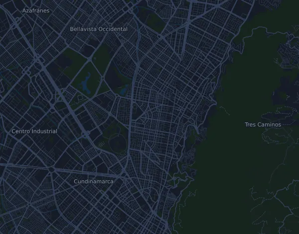

Media Maratón de Bogotá (mmB) – 21K
- Distans
- 21,3 km
- Höjdmeter
- ↑ 411 m
- Högsta punkt
- 2 638 m ö.h.
- Underlag
- Väg
- Karaktär
- Kuperad
- Start
- kl. 08:30
- Vätskekontroller
- 9
Höjdprofil
Förbered dig med Mila
Mila är en löpcoach i appen. Lägger du till ett lopp i din plan planerar coachen veckorna fram till start efter din form, och ger dig en tidsprognos och en plan för tempo, vätska och energi på banan.

Rätt pass. Rätt dag.
Banan

Om banan
Banan i Bogotá ligger hela vägen mellan 2545 och 2638 meter över havet, och det är höjden mer än backarna som präglar loppet. Totalt 411 höjdmeter på 21,3 km tyder på många korta upp- och nedförsbackar längs vägen. Första stora partiet är en lång, flack stigning från km 1,4: 51 meter fördelat på knappt 4,7 km, upp till banans högsta del runt km 6–7. Därefter lutar det svagt nedåt till halvvägs. Vid km 11 kommer den enda riktigt branta backen, 51 meter på en halv kilometer, drygt 10 procent i snitt. De sista åtta kilometerna är i stort sett platta och slutar ungefär på starthöjd.
Här vinner du på tålamod. Den tunnare luften gör att vanligt tempo kostar mer, så du styr på ansträngning snarare än på tempo från sånär hemma. Håll igen i den långa stigningen tidigt och ta den branta backen vid km 11 med korta steg utan att gå över gränsen. I träningen hjälper långpass med långa, jämna stigningar, korta branta backintervaller och styrka för vader och lår. Kom gärna till Bogotá några dagar i förväg.
Beskrivningen är skriven av Milas coach utifrån banans data.
Klättringar
| Börjar vid | Längd | Höjdmeter | Lutning | Topp (m ö.h.) |
|---|---|---|---|---|
| km 1,4 | 4,7 km | 51 m | 1,1 % | 2 610 |
| km 11,0 | 500 m | 51 m | 10,2 % | 2 638 |
Inför start
Vätskekontroller
| Vid | Här finns |
|---|---|
| km 3,0 | vatten, sportdryck |
| km 5,0 | vatten, sportdryck |
| km 7,0 | vatten, sportdryck |
| km 9,0 | vatten, sportdryck |
| km 11,0 | vatten, sportdryck |
| km 13,0 | vatten, sportdryck |
| km 15,0 | vatten, sportdryck |
| km 17,0 | vatten, sportdryck |
| km 19,0 | vatten, sportdryck |
Starttider
- kl. 08:30
Källa: mediamaratonbogota.com, hämtat 15 oktober 2026
Tempotabell
Media Maratón de Bogotá (mmB) – 21K på 1:30:00 – tid per km och mellantider
4:13 per km · km 5: 21:06 · km 10: 42:13 · km 15: 1:03:19 · mål: 1:30:00
Media Maratón de Bogotá (mmB) – 21K på 1:45:00 – tid per km och mellantider
4:55 per km · km 5: 24:37 · km 10: 49:15 · km 15: 1:13:52 · mål: 1:45:00
Media Maratón de Bogotá (mmB) – 21K på 2:00:00 – tid per km och mellantider
5:38 per km · km 5: 28:09 · km 10: 56:17 · km 15: 1:24:26 · mål: 2:00:00
Media Maratón de Bogotá (mmB) – 21K på 2:15:00 – tid per km och mellantider
6:20 per km · km 5: 31:40 · km 10: 1:03:19 · km 15: 1:34:59 · mål: 2:15:00
Tiderna förutsätter jämnt tempo hela vägen. Det är ren räkning, ingen prognos: i backar, i trängsel och vid vätskekontroller varierar tempot.
Vanliga frågor
När går Media Maratón de Bogotá (mmB) – 21K?
Media Maratón de Bogotá (mmB) – 21K går söndag 25 juli 2027. Kontrollera datum och starttid hos arrangören.
Vilken tid startar Media Maratón de Bogotá (mmB) – 21K?
Enligt arrangören: kl. 08:30.
Hur lång är Media Maratón de Bogotá (mmB) – 21K och hur många höjdmeter är det?
Loppet är 21,3 km långt med 411 höjdmeter uppför och 406 nedför. Högsta punkten ligger 2 638 m ö.h.
Hur ser banan på Media Maratón de Bogotá (mmB) – 21K ut?
Banan räknas som kuperad, med 19 höjdmeter per km i snitt. Den har 2 klättringar på minst 25 höjdmeter; den största börjar vid km 1,4: 51 höjdmeter på 4,7 km. Banan går från start till ett mål på en annan plats. Underlaget är väg.
Finns det vätskekontroller på Media Maratón de Bogotá (mmB) – 21K?
Ja. Arrangören har 9 vätskekontroller: km 3,0 (vatten, sportdryck); km 5,0 (vatten, sportdryck); km 7,0 (vatten, sportdryck); km 9,0 (vatten, sportdryck); km 11,0 (vatten, sportdryck); km 13,0 (vatten, sportdryck); km 15,0 (vatten, sportdryck); km 17,0 (vatten, sportdryck); km 19,0 (vatten, sportdryck).
Hur lägger jag upp farten på Media Maratón de Bogotá (mmB) – 21K?
Sikta på en jämn ansträngning snarare än ett jämnt tempo: låt farten gå ner i uppförsbackarna, hämta tillbaka den när det planar ut, och håll igen de första kilometrarna. De största klättringarna börjar vid km 1,4 och km 11,0. I Mila får du en tempoplan för just den här banan efter din egen form.
Fler lopp som det här
Fler lopp i närheten
- Davos X-Trails (tidigare Swissalpine Davos) – Diamond Run 68 km24 juli 2027 · Davos, Schweiz
- Montreux Trail Festival – MXTREME 100 (102 km)24 juli 2027 · Bex, Schweiz
- Speedgoat Mountain Races by UTMB – 50K24 juli 2027 · Snowbird, USA
Förbered dig med Mila
Rätt pass. Rätt dag.
Uppgifterna kommer ur banfilen och arrangörens information. Kontrollera datum, starttider och regler hos arrangören.
Mila är inte kopplad till, sponsrad av eller godkänd av arrangören eller loppets sponsorer. Namn och varumärken tillhör sina ägare. Arrangör eller rättighetsinnehavare? Begär ändring eller borttagning